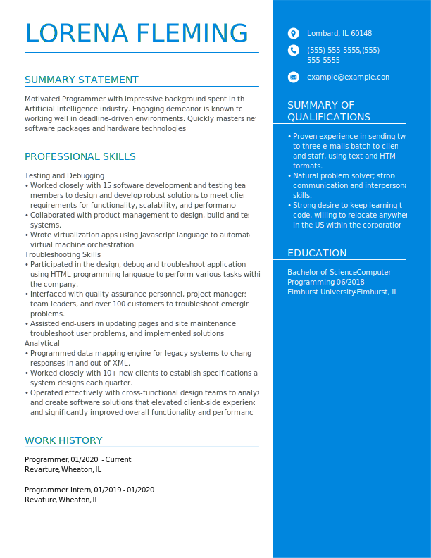
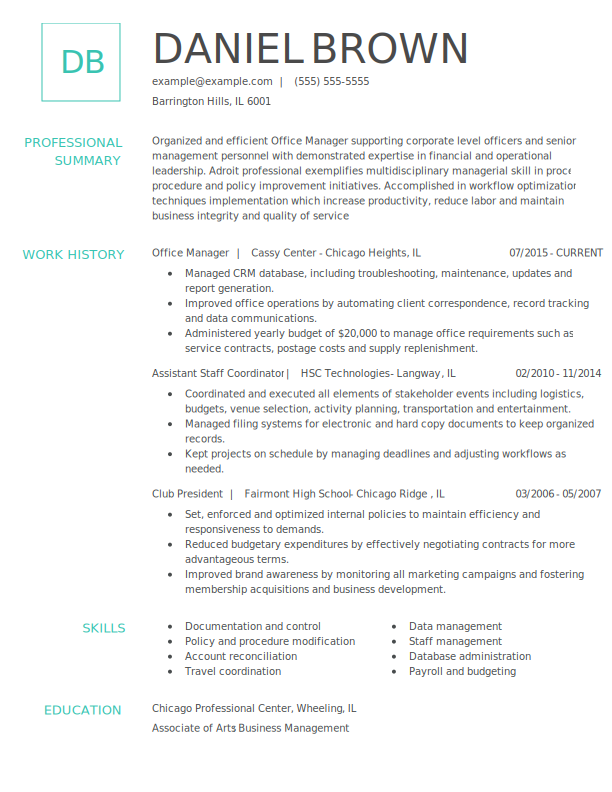
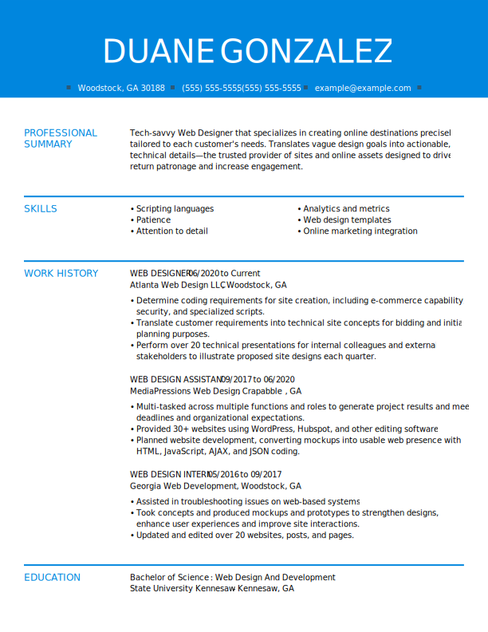

Functional Resumes
A functional resume is a resume format that focuses more on your professional skills rather than each job you held and when you held that job.
Looking to emphasize your skills rather than your career progression? The functional resume format is the ideal choice for you. And if you're a career changer, job seeker with employment gaps, or someone with a highly developed skill set, the functional resume format gives you the best chance of impressing a hiring manager.
The biggest difference between a functional resume and the standard chronological resume is that a functional resume groups your experience under skill categories instead of job titles. Under each skill category, bullet points are used to highlight examples of your skills, and those examples can come from both work and life experiences.
Functional resumes are a useful tool for highlighting your skills and abilities, but it's important to be honest about your work history and to include any relevant experience that you have had. Employers may be skeptical of a functional resume if it appears to be hiding gaps in employment or job hopping.

Chronological Resume
A chronological resume opens with an introduction, and then provides an overview of your professional history in reverse-chronological order (meaning your most recently held position is listed at the top).
A chronological resume is a type of resume that lists your work history in reverse chronological order, with your most recent job at the top and your earliest job at the bottom. This type of resume is the most traditional and is often preferred by employers because it provides a clear, straightforward overview of your work history and professional experience.
In a chronological resume, it's important to highlight your achievements and responsibilities in each of your past jobs, and to include any relevant experience that you have had. This type of resume is a good choice for people who have a strong, steady work history and who want to highlight their professional experience and accomplishments.

Combinational Resume
A combination resume, also known as a hybrid resume, is a type of resume that combines elements of both functional and chronological resumes. In a combination resume, you begin with a summary or objective section that outlines your skills and experience, and then you list your work history in reverse chronological order, starting with your most recent job. The work history section is followed by a skills section, in which you group your skills and abilities into categories.
A combination resume format emphasizes both skills and accomplishments, and recent work history.
For reference, a combination resume will include elements of the other two commonly used resume formats:
Functional resume format: Lists required, relevant and transferable skills that set you apart from other candidates.
Chronological resume format: Provides recent and relevant work history in reverse-chronological order, listing the most recent work experiences first in the professional history section.
A combination resume is a good choice for people who want to highlight their skills and accomplishments, but who also want to include a traditional work history section. This type of resume is often used by people who are changing careers, who have gaps in their work history, or who have held a number of different jobs and want to highlight their skills and accomplishments rather than their job titles.
